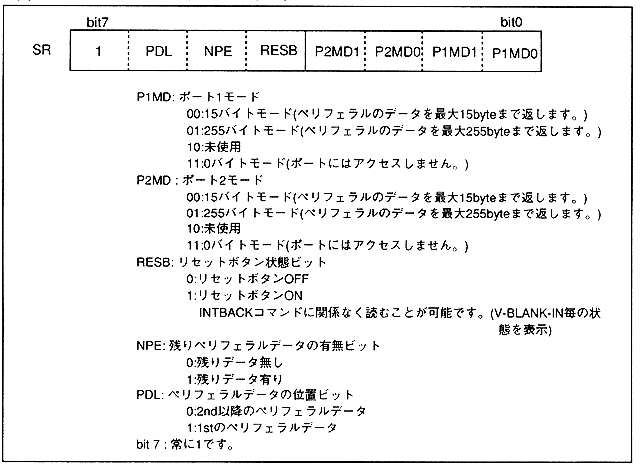

* SMPC outputs the peripheral control status to the status register (SR) when using the SMPC control mode. The status register (SR) can be read regardless of the INTBACK command. However, if this register is read while the INTBACK command is not being used, the bits other than the RESB bit are undefined.
Figure 3.13 Peripheral control status
